About Me
I'm a 23-year-old Data Engineer with a deep passion for intelligent systems that solve real-world challenges. I hold a Bachelor of Science in Computer Science from the University of Texas at Dallas, along with professional certifications in IBM AI Engineering and IBM Data Science.
My core expertise lies in machine learning, deep learning, data science, and conversational AI systems. I thrive on building innovative, AI-powered solutions and am continually exploring the frontiers of artificial intelligence and its applications across various industries. My ultimate goal is to harness AI to deliver impactful, real-world solutions that improve lives.
I'm highly proficient with today's most advanced AI tools, including ChatGPT-4o, Gemini 2.5 Flash, Grok-3, Microsoft CoPilot, Claude Sonnet 4, Perplexity, DeepSeek R1, and Meta AI Llama 4 Maverick. I actively experiment with these platforms to build smarter, more adaptive systems and stay ahead in the rapidly evolving AI landscape.
Beyond tech, I live an active and curious life. I'm an avid runner with a love for aviation, astronomy, hiking, and travel. I also enjoy unwinding with Netflix or documentaries, and I value spending time with family and friends. In my free time, I'm often reading about the latest breakthroughs in technology, AI, and the future of intelligent systems.
Projects
Here are some of my notable projects:
-
🧠 HoodaAgents – GPT-4 AI Assistant: A custom AI agent built using GPT-4 (OpenAI), LangChain, and Streamlit. Features conversational memory, live web search via Tavily, and built-in tools like a calculator. This project demonstrates end-to-end agentic design, local deployment, and API integration.
🎥 Watch Demo | 📂 View on GitHub - Virtual TA Chatbot: Designed and implemented a conversational AI system to assist students with course-related queries. This project, completed as my senior capstone, uses natural language processing to understand and respond to student questions in real-time. View on GitHub
- IBM AI Engineering Capstone: Developed and deployed an AI model for image recognition and predictive analytics. View on GitHub
- Food Demand Forecasting: Conducted data analysis and built machine learning models to optimize restaurant demand predictions. View on GitHub
- Liver Cancer Prediction: Built a machine learning model to predict the likelihood of liver cancer using patient health data. The project involved feature engineering, data preprocessing, and model selection to enhance prediction accuracy. View on GitHub
- TogetherAI Agent: Developed an AI assistant leveraging Together.ai's API and the meta-llama/Llama-3.3-70B-Instruct-Turbo code model. This project integrates advanced natural language processing capabilities to create a functional AI agent capable of understanding and responding to user inputs effectively. View on GitHub
💬 Meet TARS – My AI Assistant
I built a custom AI assistant called TARS using OpenAI's GPT-4. TARS is designed to solve real-world problems through natural conversations. Try it out below!
💡 Chat with TARS NowRunning Journey
Running has been my passion and a source of discipline and motivation. I've competed in various distances and continue to push my limits. Notable achievements include:
- Half Marathon Personal Best: 1:24:31 (2025 Aramco Houston Half Marathon)
- 8k Personal Record: 30:20 (2024 39th annual Sugar Land Turkey Trot) View Results
- 5k Personal Record: 18:15 (2025 Women's Quarter Marathon - Houston Running Co) View Results
- Current Weekly Mileage: 30+ miles/week
Follow my training journey on my public Strava account: here.
Morning Hike around Lake Monarch – Granby, CO
First solo hike in Arapaho National Forest. Soundtrack: Hans Zimmer – First Step & Day One (Interstellar).
- Distance: 4.07 mi
- Elevation Gain: 335 ft
- Time: 1h 18m
- Calories: 499
- Avg HR: 107 bpm
Route Map & Stats
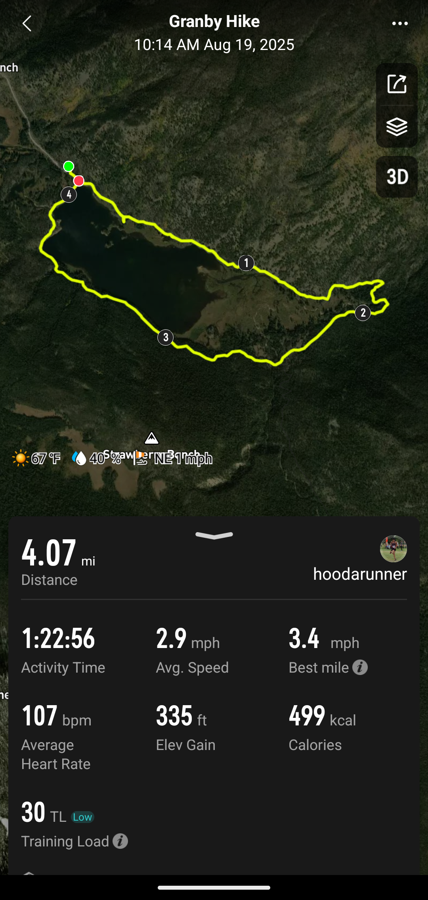3D View
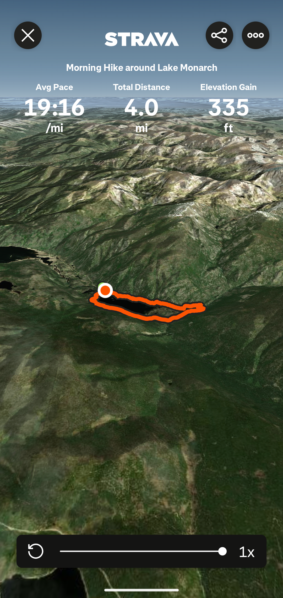Activity Summary
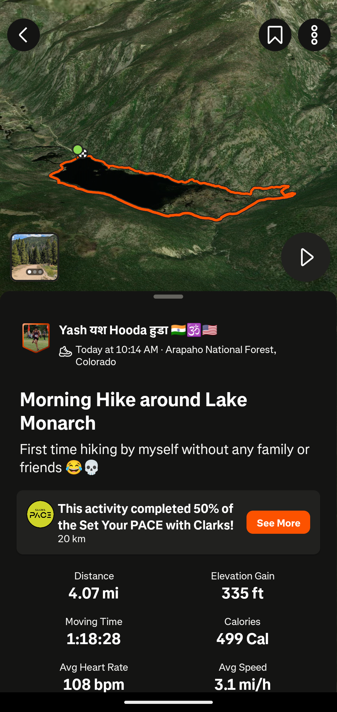Photo Journal
 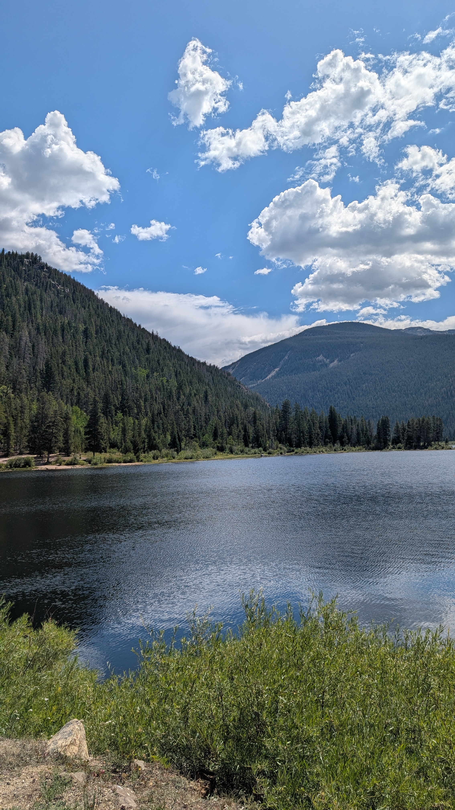
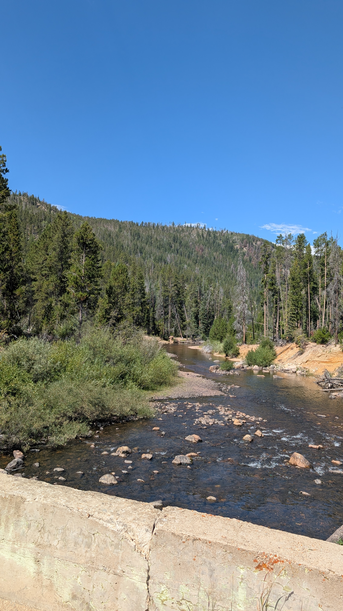
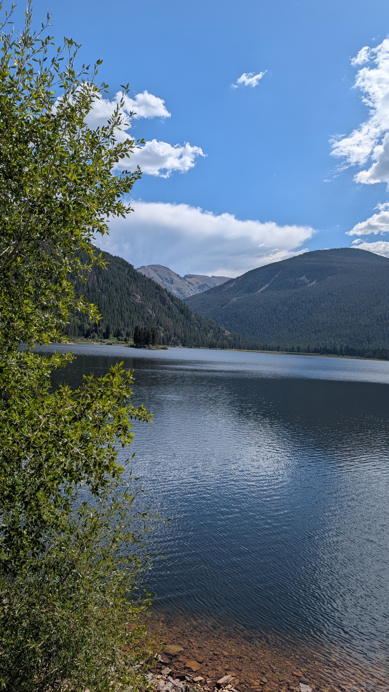
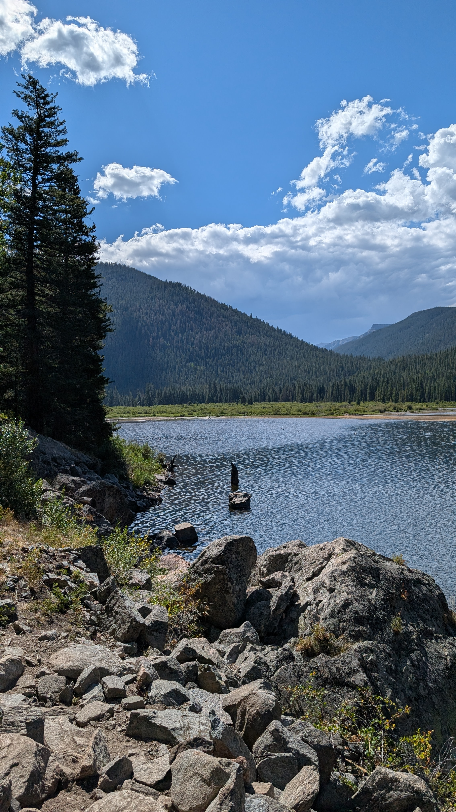
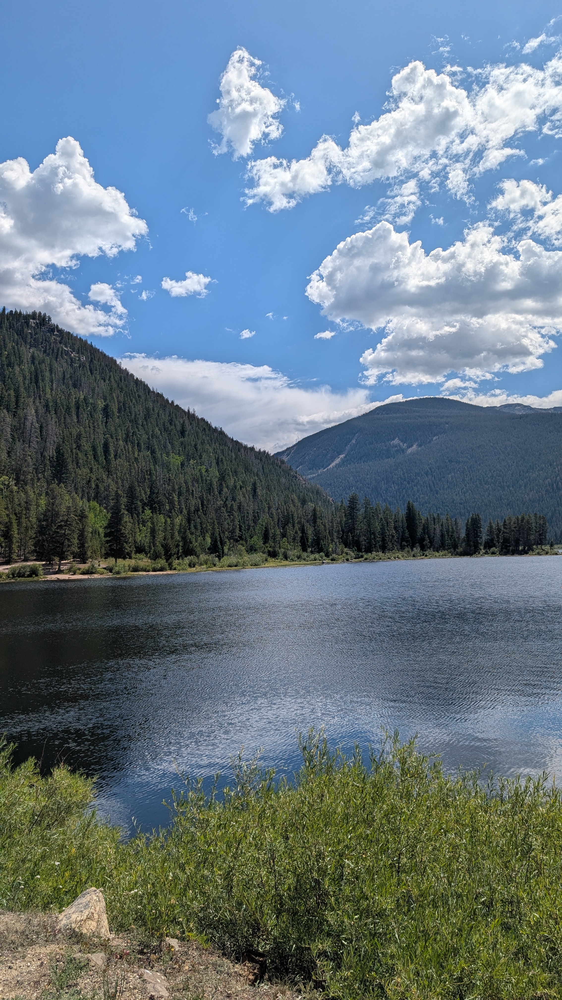
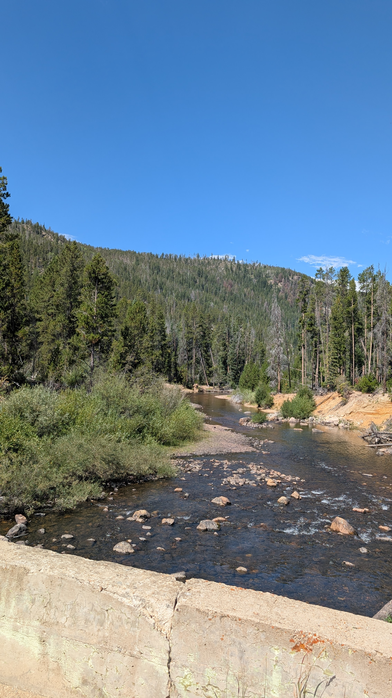
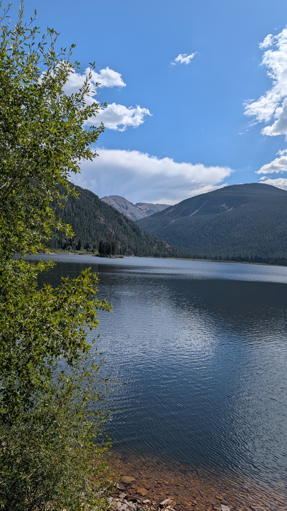
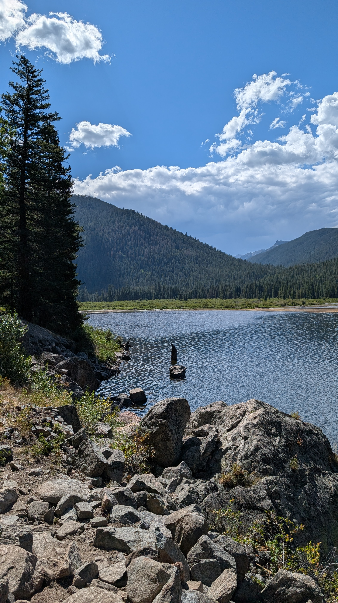

This wasn’t just a hike — it felt like a milestone in independence. Quiet pines, glassy water, and a soundtrack that made the views feel cinematic.
Contact Info
I'd love to connect! Feel free to reach out to me:
- Email: yash.hooda6@gmail.com
- LinkedIn: View my Profile
- GitHub: View my Repositories
- Linktree: View my Linktree
- Resume: Download PDF